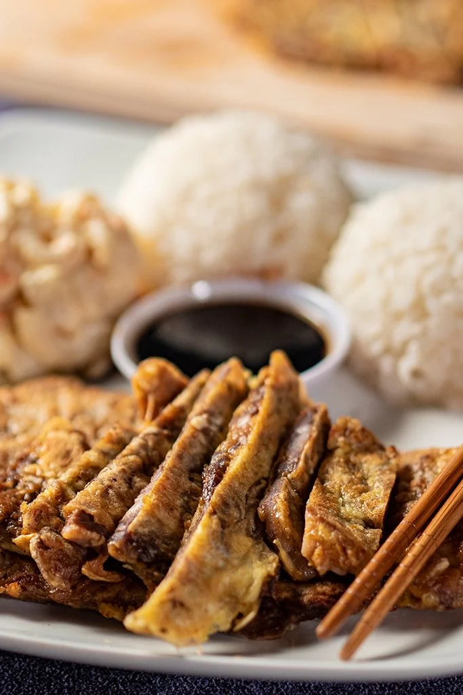

How to Make Korean-Hawaiian Meat Jun

Meat Jun | A Hawaiian Korean Fusion Entree
Since leaving Hawaii, I've been on a quest to discover just one Korean restaraunt that served this egg battered beef. Little did I know, this is not at all a common Korean dish, and the only hopes I have at feasting on one of the greatest delicacies on the planet is to fry it up in my own home. This recipe is sure to blow your mind and empty your pocket as you book your first class ticket to Hawaii.
Ingredients
- 1 lb Rib Eye Beef (can be bought at Korean Store already sliced)
- 8 Eggs
- Flour as needed
Marinade:
- 3/4 cup Shoyu (soy sauce)
- 1/2 cup Water
- 3/4 cup Sugar
- 2 cloves Minced Garlic
Dipping Sauce:
- 1/3 cup Shoyu (soy sauce)
- 1 tbsp Rice Wine Vinegar
- 1 tsp Sesame Oil
- 2 pinches Red Pepper Flakes (optional)
- 1 tsp Gochujang/Chili Oil (optional)
Steps
- Cut the meat into very thin slices (ask butcher if they can cut the meat into thin slices about 1/4 inch thick). If using chicken, flatten it out a bit by using a mallet.
- Combine the shoyu, water, sugar, and garlic; mix well until sugar has dissolved. Add meat to the marinade and cover with a plastic wrap or towel. Let it marinade in the fridge for 1-2 hours.
- After the meat has marinated, whisk eggs in a large bowl. Add enough flour to a plate to dredge the meat in.
- Heat and oil a non stick pan over medium heat. Dredge the meat first in flour, then cover it in the whisked eggs. Quickly transfer the meat to the pan. Repeat the same process until the pan is slightly full.
- Cook the meat for 1-2 minutes or until the bottom becomes lightly golden brown. Flip and cook for another 1-2 minutes. Remove from the pan after all sides have been cooked.
Dipping Sauce:
Combine shoyu, rice vinegar, sesame oil, and two pinches of red pepper flakes or replace the pepper for gochujang or chili oil. Whisk to combine.
Serve:
Cut meat into thin strips and serve with dipping sauce on the side. If you made a large batch, you can freeze it for up to one month. When serving it again, defrost then pan fry it again with some oil to reheat.
Enjoy and Mahalo!